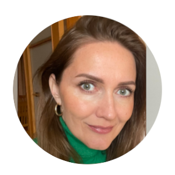

Our team:
Zanda Rasa
Beginner in programming.
I like to learn new things and challenge myself.
In my free time, I like to be active, attend cultural events, and spend time in nature.
Fun facts:
Loves outdoors, hiking and watching the sea!
Sandra Smalina
Curious mind.
Love exploring both technology and human potential.
I am passionate about health, creative thinking models, and programming — whether it’s in computers or in the way our body and mind can be reprogrammed.
Fun facts:
Born in Malta, loves cats, enjoys climbing mountains!
Carlos Mestre
Creative thinking.
I'm interested in art and technology, seeking to merge both in my professional life.
I have a background in industrial design and I've worked in ceramics for 9 years, creating objects, teaching workshops, and selling orders in markets across Europe.
Fun facts:
Born in Portugal, worked as fisherman, loves skateboarding!